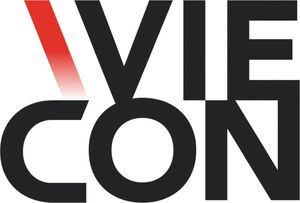

Trade Mark Journal No.2025/044 31 October 2025
WO0000001880763 (16,35,38,39,41,42,43)
Office of origin: European Union Intellectual Property Office (EUIPO)
Date of International Registration:5 August 2025
Date of designation in the UK:
5 August 2025

The mark contains the colours red and black.
- Class 16
- Printed matter; manuals [handbooks]; pads [stationery]; labels of paper; labels of paper; paper boxes; paper sacks; bags [envelopes, pouches] of paper or plastics, for packaging; printed promotional material; stationery; newspapers; periodicals; photographs [printed]; millboard; bags and articles for packaging, wrapping and storage, of paper, cardboard or plastics.
- Class 35
- Arranging and conducting business fairs; organization of trade fairs for commercial or advertising purposes; organization of trade fairs for commercial or advertising purposes; arranging and conducting recruitment fairs; organization of events, exhibitions, fairs and shows for commercial, promotional and advertising purposes; services with regard to product presentation to the public; conducting, arranging and organizing trade shows and trade fairs for commercial and advertising purposes; public relations services; advertising; dissemination of advertising and promotional materials; dissemination of advertising, marketing and publicity materials; public relations consultancy; consultancy regarding public relations communication strategies; organisation and conducting of product presentations; sales promotion for others; export promotion services; foreign trade consultancy services; services for provision of foreign trade information; data processing for the collection of data for business purposes; provision of computerised data relating to business; provision of commercial information from online databases; advice on the analysis of consumer buying habits and needs provided with the help of sensory, quality and quantity-related data; opinion polling; marketing research; compilation of statistics; compilation of business statistics and commercial information; statistical evaluations of marketing data; statistical analysis and reporting services for business purposes; professional business consultancy; business consultancy and advisory services; business management of conference centers; advisory services for business management; professional business consultancy; marketing; advertising, marketing and promotional services; advertising, promotional and public relations services; advice relating to marketing management; economic forecasting.
- Class 38
- Providing electronic conferencing services; telecommunication services.
- Class 39
- Rental services related to vehicles, transportation, and storage; travel and passenger transportation; arranging of transport and travel; transportation and storage; rental of storage space; rental of storage units; rental of space, structures, units and containers, for storage and transportation; container rental; provision of car parks and car parking services; car park services; garage rental; parking place rental; rental of portable storage containers.
- Class 41
- Arranging and conducting of congresses; arranging and conducting of conferences, congresses and symposiums; consultancy and information services relating to arranging, conducting and organisation of congresses; arranging of conferences; arranging of conferences; conducting of business conferences; arranging and conducting of conferences; arranging and conducting of conferences; organisation of meetings and conferences; organisation of seminars and conferences; arranging of conferences relating to cultural activities; organisation of conferences related to entertainment; seminars; organisation of seminars; organisation of seminars; arranging and conducting of seminars; conducting courses, seminars and workshops; publication of texts; writing of texts; online publication of electronic books and journals; organisation of entertainment and cultural events; organisation of events for cultural, entertainment and sporting purposes; publication of magazines; publication of books; publication of printed matter; publication of printed matter, other than publicity texts, in electronic form; multimedia publishing; publication of texts, other than publicity texts; electronic text publishing services; publication of books; publication of magazines; teaching.
- Class 42
- Creation, updating and adapting of computer programs; hosting of e-commerce platforms on the internet; design of web pages; design of homepages and websites.
- Class 43
- Services for providing food and drink; catering services for conference centers; provision of conference facilities; hiring of furniture for conferences; provision of conference, exhibition and meeting facilities; rental of tents; rental of catering equipment; rental of chairs, tables, table linen, glassware; rental of furniture, linens, table settings, and equipment for the provision of food and drink; rental of crockery; rental of cooking apparatus; rental of transportable buildings.
Wiener Messe und Congress GmbH
Representative: NOMOS Rechtsanwälte GmbH NOMOS Rechtsanwälte GmbH, Ledererhof 2, A-1010 Wien, AUSTRIA